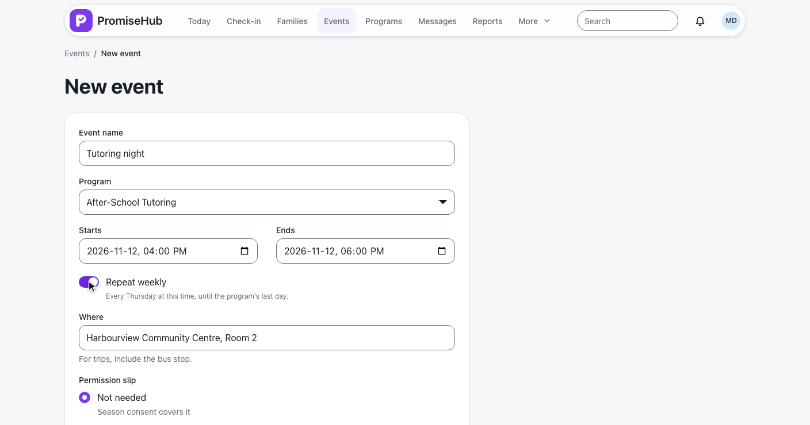
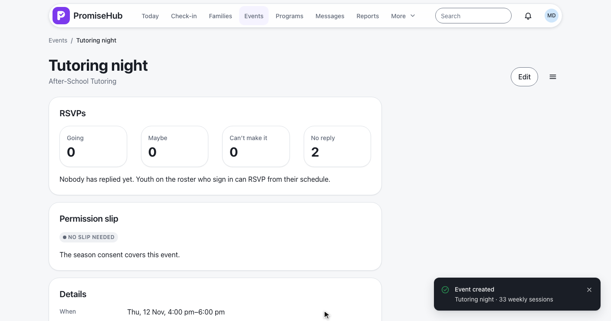
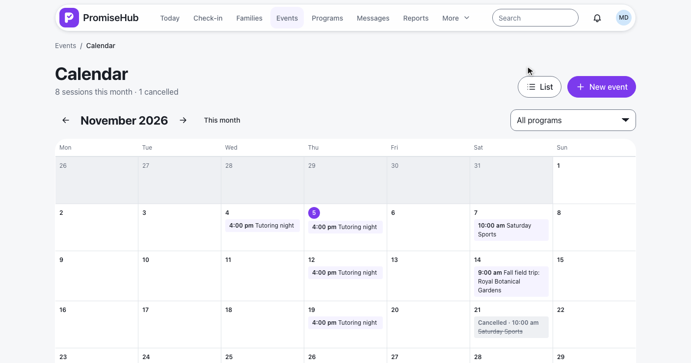
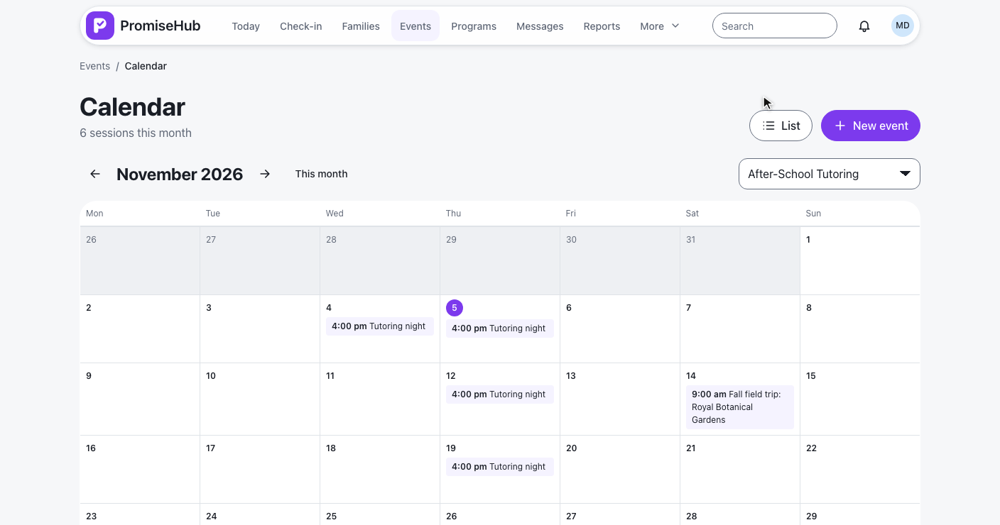
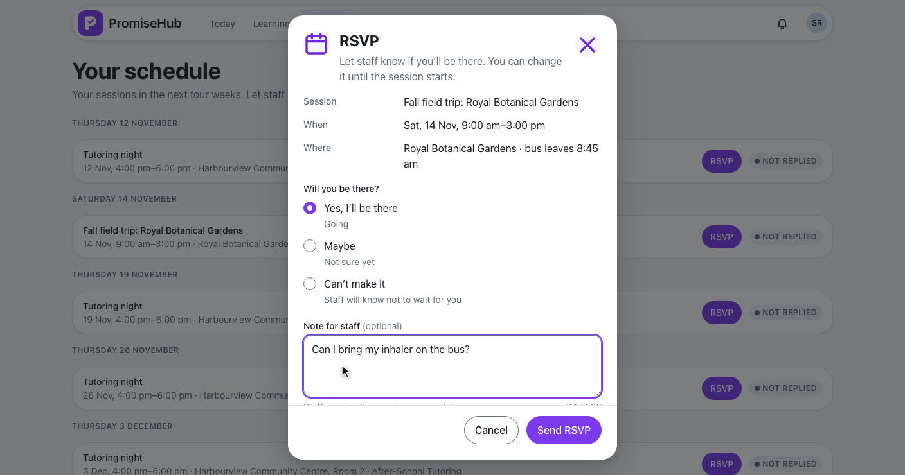
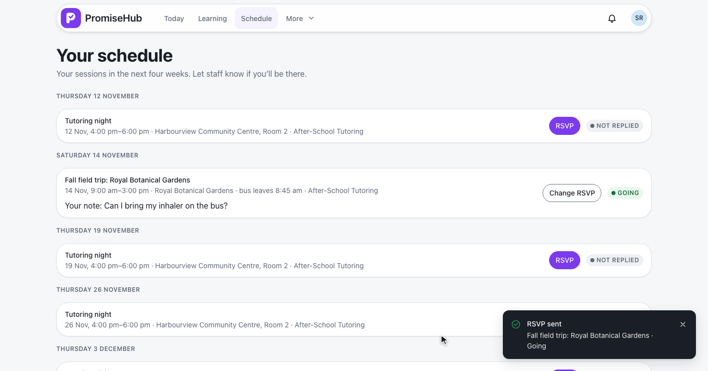
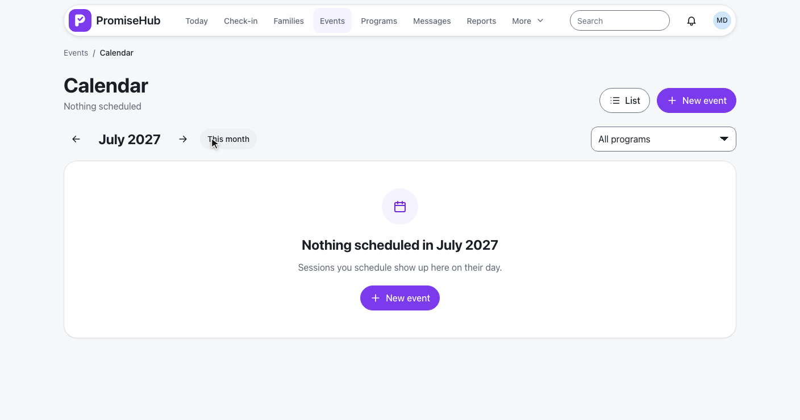
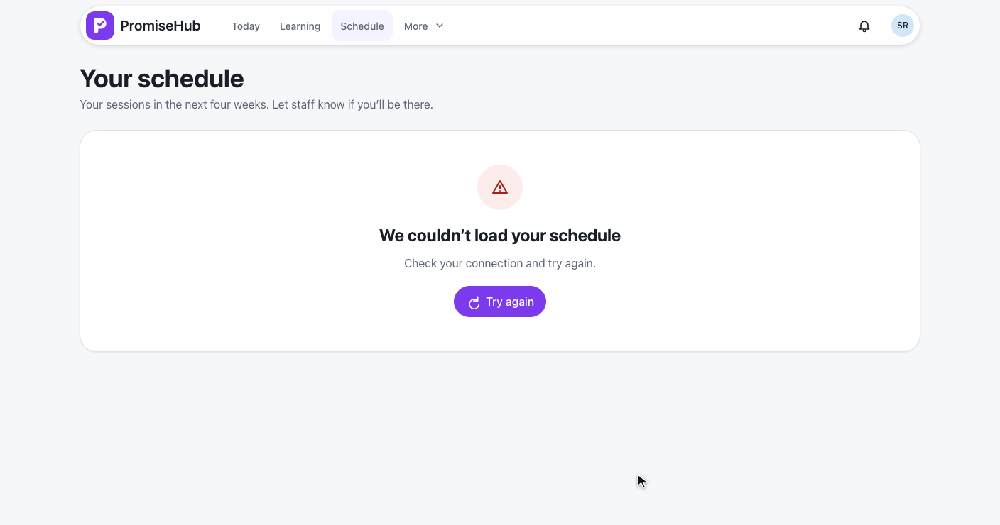

PromiseHub · Video 70
Schedule sessions and RSVP
Weekly cohort sessions as events, a month calendar, and youth answering whether they will come
Weekly cohort sessions as events, a month calendar, and youth answering whether they will come
Tutoring night every Thursday through the program’s last day.


| Rule | Answer |
|---|---|
| Each week | An ordinary event of the program, sharing a series id |
| Time | The same local time, across the March clock change |
| Last session | On or before the program’s last day (Thu 24 Jun 2027) |
| Refused | A start after the last day; more than 60 sessions (422) |
| Slips | A draft slip for each session that needs one |
| Audit | Created once, with how many sessions |
POST /events with repeatsWeekly · L2-093 · ADR 0064
November by week, the program filter, another month.


GET /events/calendar?month=2026-11&programId= · ph-calendar
RSVP to the field trip with a note for staff.


| Case | Answer |
|---|---|
| No answer, or not one of the three | 422 “Choose whether you’re going.” |
| A note over 500 characters | 422 |
| Started, ended or cancelled | 409, RSVPs closed |
| A program she is not on | 403, audited |
| Another organization | 404 |
| Under the consent age, no consent | 403 consent-required |
| Audit | Created or Updated with the answer; never the note |
GET /schedule · PUT /schedule/{eventId}/rsvp · L2-094
Counts, then each answer with its note.
The agenda, the schedule and the RSVP sheet.
Invalid, failed, closed, error, consent required, Roster off.


ScheduleSessionsTests and EventCalendarTests: series, clock change, limits, months, days, filter, tenancy, Roster offYouthScheduleTests and EventRsvpsTests: schedule, every RSVP check, counts, consent, rolesschedule-sessions, calendar, youth-schedule and event-rsvps specs on phone and laptop, with axe
Next: take attendance for cohort sessions